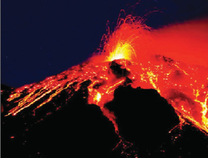
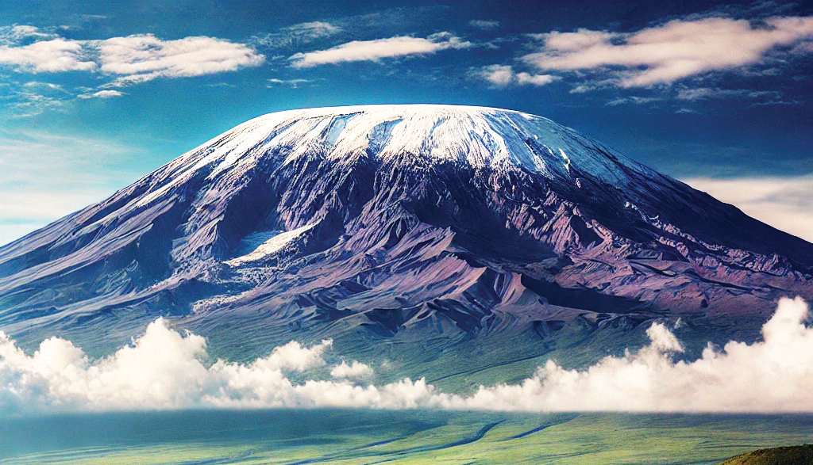

which have not erupted for a very long time and have not shown any sign of eruption, are known as extinct or dead volcanic mountains. Examples include Mount Rungwe in Tanzania, Mount Kulal in Kenya, and Mount Chimborazo in Ecuador.

Figure 4.6 (a): Volcanic eruption of Mt. Vesuvius in Italy
Source: https://www.hindleygreensacred heart.co.uk/the-nicole- interview-vicious-volcanoes/

Figure 4.6 (b): Kilimanjaro Mountain
Source: Kilimanjaro National Park
50